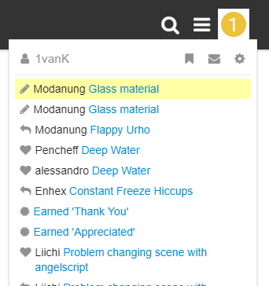
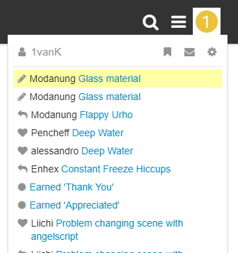

1vanK
Hm, I do not fully understand how someone (not a moderator) can edit my posts? xD


Hm, I do not fully understand how someone (not a moderator) can edit my posts? xD


I gained this privilege with the leader badge. You have the badge too, but I see you’re an actual moderator on top of that. Unlike @codingmonkey, @Lumak, myself and the enigmatic @urho3d.
Removing (redundant) [Solved] tags - marking solutions instead - and fixing broken posts in reappearing topics from the old forums is what I do mostly, also moving topics to support.
Feel free to re-edit or complain through pm. Unless it gets unreasonable, then please do keelhaul me. 
I don’t correct grammar, spelling or edit opinions and intend to make only edits that without question are an improvement to the material presented in the posts. My logic may not be as yours, feel free to tell me when this is the case or to keep my blue editorial claws off your posts altogether. 
The effect of the spoiler tag on the old forums can be achieved with the details tag on Discourse:
[details=summary]
contents
[/details]
I don’t mind, I was just surprised)
Cool, just checkin’ 
So was I. 
I can also split topics.

There is a limit to the number of people who can be given moderator status on this discourse setup (5 only)… For that reason it might be necessary to rotate inactive staff off the role, I hope that won’t offend anyone. I thought Modanung was full moderator, but I’m glad the leader badge works.

I assigned a few leader and member badges… it was not at all a subjective and ad-hoc process.
Other than that and watching for abuse/requests, I have not exercised moderatorish powers like Modanung ;), so my spot is on offer.

btw, is there any limit on leader badges? just curious (no, I don’t want it, please).
Wouldn’t that take away the very powers you are now mostly exercising?